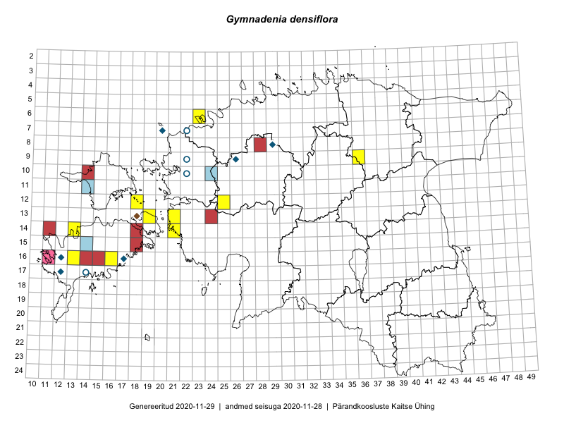

Gymnadenia densiflora
Uuendatud: 2016-12-08
Kaardile koondatud taksonid: Gymnadenia conopsea subsp. densiflora (Wahlenb.) E.G.Camus & A.Camus; Gymnadenia densiflora (Wahlenb.) A.Dietr.

Kaart põhineb 11 vaatlusel. Taime on leitud 6 ruudust.
| Ruut | Vaatleja(d) | Vaatlusaeg | Kirje tüüp | Viide andmebaasikirjele |
|---|---|---|---|---|
| 13-19 | Toomas Kukk, Eerik Leibak | 2015-08-07 | punkt | vaata PlutoFis |
| 09-36 | Jana-Maria Habicht, Ester Valdvee, Tiiu Liimets | 2015-07-07 | ruut/ala | vaata PlutoFis |
| 16-13 | Sirje Azarov, Aira Alasi | 2015-07-20 | ruut/ala | vaata PlutoFis |
| 16-13 | Sirje Azarov, Aira Alasi | 2015-07-20 | punkt | vaata PlutoFis |
| 12-25 | Aat Sarv | 2015-07-30 | ruut/ala | vaata PlutoFis |
| 16-16 | Sirje Azarov, Aira Alasi | 2015-07-28 | ruut/ala | vaata PlutoFis |
| 16-16 | Sirje Azarov, Aira Alasi | 2015-07-28 | punkt | vaata PlutoFis |
| 09-36 | Liina Oja, Peedu Saar, Susanna Vain | 2016-07-25 | punkt | vaata PlutoFis |
| 09-36 | Peedu Saar, Liina Oja, Susanna Vain | 2016-07-25 | ruut/ala | vaata PlutoFis |
| 14-13 | Toomas Kukk, Meeli Mesipuu, Mari Reitalu | 2016-10-06 | ruut/ala | vaata PlutoFis |
| 14-13 | Meeli Mesipuu, Toomas Kukk, Mari Reitalu | 2016-10-06 | punkt | vaata PlutoFis |